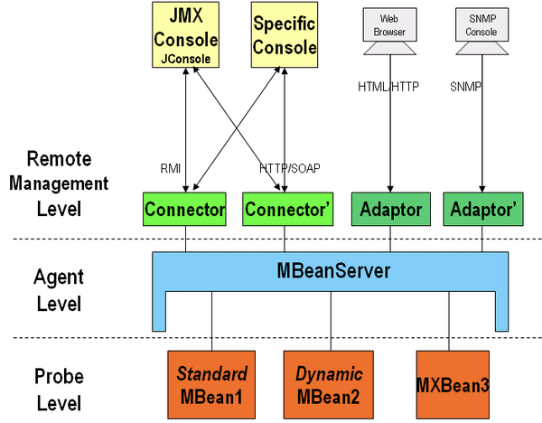
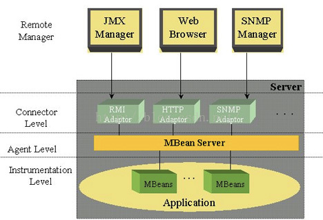

目录
JMX（Java管理扩展），是一套给应用程序引入监控管理功能的接口。比如我们可以通过JMX来监控Tomcat的运行状态。JMX最主要的应用场景就是中间件的监控，配置文件的在线修改配置。
一个典型的JMX架构图：

MBean：是Managed Bean的简称。在JMX中MBean代表一个被管理的资源实例，通过MBean中暴露的方法和属性，外界可以获取被管理的资源的状态和操纵MBean的行为。事实上，MBean就是一个Java Object，同JavaBean模型一样，外界使用自醒和反射来获取Object的值和调用Object的方法，只是MBean更为复杂和高级一些。
MBeanServer：MBean生存在一个MBeanServer中。MBeanServer管理这些MBean，并且代理外界对它们的访问。并且MBeanServer提供了一种注册机制，是的外界可以通过名字来得到相应的MBean实例。
JMX Agent：Agent只是一个Java进程，它包括这个MBeanServer和一系列附加的MbeanService。当然这些Service也是通过MBean的形式来发布。
ObjectName：MBean在MBeanServer中的唯一标识。
Protocol Adapters and Connectors
JMX Agent通过各种各样的Adapter和Connector来与外界(JVM之外)进行通信。同样外界（JVM之外）也必须通过某个Adapter和Connector来向JMX Agent发送管理或控制请求。
Adapter和Connector的区别在于：Adapter是使用某种Internet协议来与JMX Agent获得联系，Agent端会有一个对象(Adapter)来处理有关协议的细节。比如SNMP Adapter和HTTP Adapter。而Connector则是使用类似RPC的方式来访问Agent，在Agent端和客户端都必须有这样一个对象来处理相应的请求与应答。比如RMI Connector。
JMX Agent可以带有任意多个Adapter，因此可以使用多种不同的方式访问Agent。
jmx中的三层结构：
Instrumentation 层：Instrumentation层主要包括了一系列的接口定义和描述如何开发MBean的规范。通常JMX所管理的资源有一个或多个MBean组成，因此这个资源可以是任何由Java语言开发的组件，或是一个JavaWrapper包装的其他语言开发的资源。
Agent 层：Agent用来管理相应的资源，并且为远端用户提供访问的接口。Agent层构建在Intrumentation层之上，并且使用并管理Instrumentation层内部描述的组件。通常Agent由一个MBeanServer和多个系统服务组成。另外Agent还提供一个或多个Adapter或Connector以供外界的访问。
JMX Agent并不关心它所管理的资源是什么。
Distributed 层：Distributed层关心Agent如何被远端用户访问的细节。它定义了一系列用来访问Agent的接口和组件，包括Adapter和Connector的描述。

一个MBean是一个被管理的Java对象，有点类似于JavaBean，一个设备、一个应用或者任何资源都可以被表示为MBean，MBean会暴露一个接口对外，这个接口可以读取或者写入一些对象中的属性，通常一个MBean需要定义一个接口，以MBean结尾， 例如： EchoMBean, 格式为XXXMBean，这个是规范，必须得遵守。
import javax.management.MBeanServer;
import javax.management.ObjectName;
import java.lang.management.ManagementFactory;
public class App {
public static void main(String[] args) throws Exception {
// 创建MBeanServer
MBeanServer mbs = ManagementFactory.getPlatformMBeanServer();
// 新建MBean ObjectName, 在MBeanServer里标识注册的MBean
ObjectName name = new ObjectName("com.csx.demo.spring.boot.jmx.mbean:type=Echo");
// 创建MBean,Echo类需要实现相关接口
Echo mbean = new Echo();
//注册以后可以通过Jconsole等工具查看
// 在MBeanServer里注册MBean, 标识为ObjectName(com.dxz.mbean:type=Echo)
mbs.registerMBean(mbean, name);
// 在MBeanServer里调用已注册的EchoMBean的print方法
mbs.invoke(name, "print", new Object[] { "china sf"}, new String[] {"java.lang.String"});
Thread.sleep(Long.MAX_VALUE);
}
}通过上面代码发布Echo后，我们就可以通过Jconsole等工具查看Echo在JMX上的注册情况了。
当我们启动java进程后，经常会使用jps，jinfo，jmap，jstat等jdk自带的命令去查询进程的状态，这其中的原理就是，当java进程启动后，会创建一个用于本机连接的“localConnectorAddress”放到当前用户目录下，当使用jps等连接时，会到当前用户目录下取到“localConnectorAddress”这个JMX连接地址并连接。
若想远程连接访问，肯定需要mBeanServer注册一个或多个端口，如rmi端口，http端口等。有两种方法可以配置远程连接：
一种是直接在代码里面指定rmi端口，并绑定，此种方法需要使用客户端代码访问，
另一种代码不用指定端口，只需要把mbean注册到platformMBeanServer 里面，并在启动进程时加jmx参数指定，用这种方法可以通过jconsole,jvisualvm远程访问。比如Tomcat的监控配置
-Dcom.sun.management.jmxremote=true 相关 JMX 代理侦听开关
-Djava.rmi.server.hostname 服务器端的IP
-Dcom.sun.management.jmxremote.port=29094 相关 JMX 代理侦听请求的端口
-Dcom.sun.management.jmxremote.ssl=false 指定是否使用 SSL 通讯
-Dcom.sun.management.jmxremote.authenticate=false 指定是否需要密码验证一些概念：
MBeanExporter: 从字面上很容易理解, 用来将一些spring的bean作为MBean暴露给MBEanServer。
MBeanServerFactoryBean: 也可以在spring中作为一个spring bean注入, 它用来将外部或者当前机器上的MBeanServer包装成一个bean。
MBeanInfoAssembler : 用来控制作为MBean的spring bean的哪些属性或方法将暴露出去, 以及决定何种形式的bean会被暴露成MBean. 不同的实现有不同的暴露方式。
ObjectNamingStrategy : 用来控制作为MBean暴露出去的spring bean在MBeanServer中将如何命名(ObjectName), 描述, 指定初始值等, ObjectName通常采用"域:键=值,键=值,...".
ConnectorServerFactoryBean : 用来给外界访问当前spring中的MBeanServer bean提供一个连接器, 也就是给MBeanServer开一个外加访问的口子, 比如"service:jmx:jmxmp://localhost:9875" 让外界通过jmxmp协议, 通过9875端口来访问MBeanServer, 外界要访问MBeanServer, 必须提供一个connector. 默认连接器是jmxmp协议service:jmx:jmxmp://localhost:9875 , 也可以通过其他协议的连接器, 比如协议RMI,IIOP, Burlap，Hessian，SOAP
MBeanServerConnectionFactoryBean: 用来创建一个访问MBeanServer的客户端连接器, 比如MBeanServer bean暴露了一个服务器端连接器, 那么客户端就可以通过这个连接器来访问MBeanServer中的MBean. 可以理解为ConnectorServerFactoryBean的对应物, server与client之间就是这两种连接器建立通讯连接
MBeanProxyFactoryBean: 用来创建客户端访问远程MBeanServer中的MBean的代理, 客户端要访问服务器端的bean, 除了客户端连接器之外, 还需要一个代理, 相当于一个服务器端的stub.
//将SpittleController导出为MBean
@ManagedResource(objectName="spitter:name=SpittleController3")
public class SpittleCntroller3 {
// 默认每个页面的大小
public static final int DEFAULT_SPITTLES_PER_PAGE = 25;
// 每页的大小
private int spittlesPerPage = DEFAULT_SPITTLES_PER_PAGE;
//@ManagedOperation@ManagedOperation注解替换@ManagedAttribute注解来标注存取器方法
@ManagedAttribute //将spittlesPerPage暴露为托管属性
public int getSpittlesPerPage() {
return spittlesPerPage;
}
//@ManagedOperation@ManagedOperation注解替换@ManagedAttribute注解来标注存取器方法
@ManagedAttribute //将spittlesPerPage暴露为托管属性
public void setSpittlesPerPage(int spittlesPerPage) {
this.spittlesPerPage = spittlesPerPage;
}
@RequestMapping(value = "/test3", method = GET)
public String test() {
String result = spittlesPerPage + " - test()";
System.out.println(result);
return "home";
}
}@ManagedResource将类暴露成MBean，@ManagedAttribute暴露属相，@ManagedOperation暴露方法。上面的配置需要开启@EnableMBeanExport注解。
远程MBean的暴露和访问方法请参考博客
另外JMX还有消息发布和订阅功能。需要使用时可以参考。
https://www.cnblogs.com/duanxz/category/689081.html
http://www.cnblogs.com/dongguacai/p/5900507.html
https://www.imooc.com/article/37008?block_id=tuijian_wz
https://blog.csdn.net/lmy86263/article/details/71037316